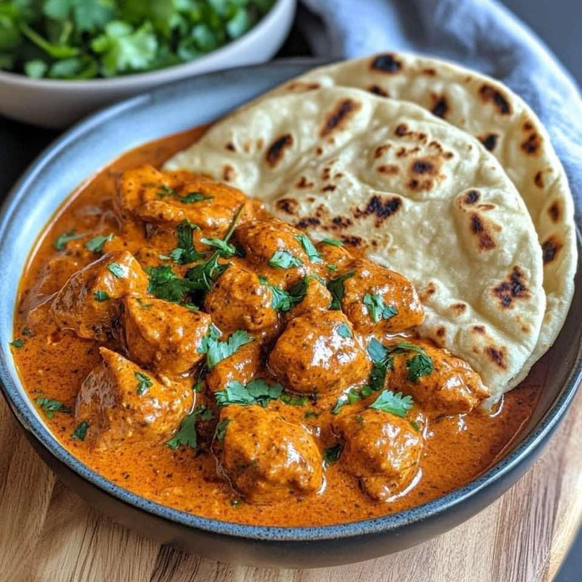

Butter Chicken with Naan 🥘🍞
IndianChicken
Servings4
PrepPT20M
CookPT45M

Ingredients
- For the Butter Chicken:
- 1.5 lbs boneless chicken thighs, cut into bite-sized pieces
- 1 cup plain yogurt
- 2 tablespoons lemon juice
- 1 tablespoon garam masala
- 1 tablespoon ground cumin
- 1 teaspoon ground turmeric
- 1 teaspoon ground coriander
- 1 teaspoon chili powder (adjust to taste)
- 1 tablespoon minced garlic
- 1 tablespoon minced ginger
- 1 tablespoon vegetable oil or ghee
- For the Sauce:
- 3 tablespoons butter
- 1 large onion, finely chopped
- 3 cloves garlic, minced
- 1 tablespoon ginger, minced
- 1 teaspoon ground cumin
- 1 teaspoon garam masala
- 1 teaspoon ground coriander
- 1/2 teaspoon chili powder (optional, adjust to taste)
- 1/2 teaspoon ground turmeric
- 1 (15 oz) can tomato puree (or crushed tomatoes)
- 1 cup heavy cream (or coconut milk for a lighter option)
- 1 tablespoon sugar (optional, to balance acidity)
- Salt, to taste
- Fresh cilantro, chopped (for garnish)
- For the Naan:
- 2 cups all-purpose flour
- 1/2 teaspoon salt
- 1/2 teaspoon baking powder
- 1/2 teaspoon sugar
- 2 tablespoons yogurt
- 2 tablespoons oil or melted butter
- 3/4 cup warm water
- Additional melted butter or ghee (for brushing)
- Fresh garlic and cilantro (optional, for garnish)
Directions
- Marinate the Chicken:
- In a large bowl, combine yogurt, lemon juice, garam masala, cumin, turmeric, coriander, chili powder, garlic, and ginger.
- Add the chicken pieces to the marinade, ensuring they are fully coated.
- *Cover and refrigerate for at least 1 hour, preferably overnight for maximum flavor.
- Cook the Chicken:
- Heat oil or ghee in a large skillet or pot over medium-high heat.
- Add the marinated chicken pieces and cook until browned on all sides.
- *The chicken does not need to be fully cooked at this stage.
- Remove the chicken from the skillet and set aside.
- Prepare the Sauce:
- In the same skillet,
- add butter and melt over medium heat.
- Add the chopped onions and sauté until golden brown.
- Stir in the garlic and ginger, cooking for another 1-2 minutes until fragrant.
- Add cumin, garam masala, coriander, chili powder, and turmeric.
- Stir for 1 minute to toast the spices.
- Pour in the tomato puree and simmer for 10-15 minutes, allowing the flavors to meld and the sauce to thicken slightly.
- Finish the Butter Chicken:
- Add the partially cooked chicken back into the sauce. Stir well to coat the chicken in the sauce.
- Pour in the heavy cream and simmer the mixture for another 10-15 minutes, until the chicken is fully cooked and tender.
- Adjust seasoning with salt and sugar if needed. Garnish with fresh cilantro.
- Prepare the Naan:
- In a large mixing bowl, combine flour, salt, baking powder, and sugar.
- Add yogurt and oil (or melted butter) and mix until crumbly.
- Gradually add warm water, mixing until a soft dough forms. Knead the dough for about 5 minutes until smooth.
- *Cover the dough with a damp cloth and let it rest for 30 minutes.
- Divide the dough into small balls (about 8-10 pieces). Roll each ball out into an oval or round shape on a floured surface.
- Heat a skillet over medium-high heat.
- Cook each naan for about 1-2 minutes on each side, until puffy and golden brown.
- Brush the hot naan with melted butter or ghee and garnish with minced garlic and cilantro if desired.
- Serve:
- Serve the butter chicken hot, garnished with additional cilantro, alongside the freshly cooked naan.
- Enjoy with basmati rice or extra naan for dipping in the rich, creamy sauce.
- Tips:
- Marination: The longer you marinate the chicken, the deeper the flavors will be.
- Creaminess: Adjust the amount of cream or use coconut milk for a lighter dish.
- Naan Variations: Add garlic, herbs, or spices to the naan dough for different flavors.
- Enjoy your homemade Butter Chicken with Naan!
This page includes Schema.org Recipe structured data for recipe importers.